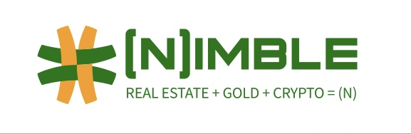

Multifamily assets
Income-oriented property exposure within the documented Nimble structure.

For multifamily property owners
Contribute a qualifying multifamily property and convert its agreed value into a position within Nimble's real-estate, gold and digital-asset investment model.
Designed for multifamily properties, generally 20+ units. Every opportunity is subject to property review, valuation, agreement and documentation.
How the investment is allocated
The illustrative Nimble framework allocates one-third to real estate, one-third to gold reserves and one-third to Nimble coins. Final terms are governed by the investment documents.
Income-oriented property exposure within the documented Nimble structure.
A tangible reserve component within the overall allocation.
The coin allocation is calculated from the documented value and reference price.
A property-first discussion
Each property has its own operating history, capital needs and ownership structure. The first conversation is about fit and diligence.
Review unit count, operating history, condition, debt, valuation and ownership.
Document the agreed valuation, contribution mechanics, owner position and Nimble investment terms.
Define management, reporting, reserves and responsibilities before any property changes hands.
Illustrative property contribution
At the illustrative launch price of $0.01 per coin, a $1 million property contribution corresponds to 100 million Nimble coins, subject to the governing documents.
Any interest retained by the contributing owner is documented separately from the three-part Nimble allocation.
Valuation, ownership interests, coin allocation, decision rights and closing mechanics are established in the signed documents.
Begin with your property
Review the property-owner overview, then bring your asset profile and questions to an introductory discussion.
Open property-owner sell sheet ↓